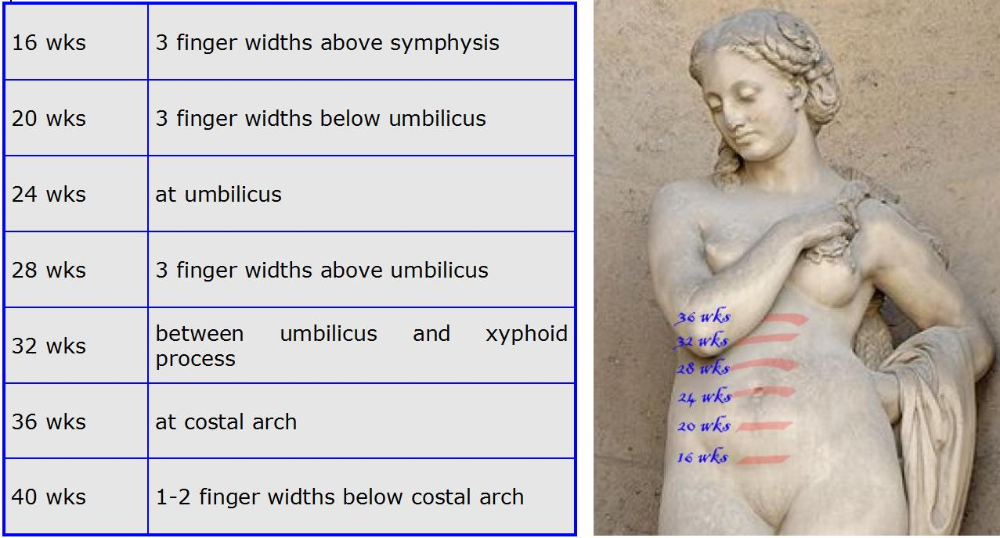

Página 1 · Sofrimento fetal crônico
Agudo × crônico: a divisão que decide tudo, e a chegada da Terezinha
Duas doenças com o mesmo nome
Duas doenças com o mesmo nome. Sofrimento fetal não é uma coisa só. Ele se parte em dois mundos que se comportam de forma oposta e pedem condutas opostas — agudo e crônico — e essa divisão é a moldura que organiza todo o raciocínio a partir daqui. No crônico, o estrago se instala devagar: quase sempre há margem para ganhar tempo, vigiar de perto e, quando o feto é muito prematuro, administrar corticoide antes de qualquer resolução. No agudo ⏱️, o oposto: o sofrimento explode agora, não dá para esperar, e a resposta tende a ser a via de parto mais rápida. Guarde a pergunta que separa os dois mundos, porque ela vem antes de qualquer conduta: o sofrimento se instalou devagar, ou explodiu agora?
Interativo: toque em cada ramo para ver a conduta correspondente.
O crônico dá margem para vigiar, ganhar tempo e amadurecer o pulmão (corticoide se prematuro); o agudo explode agora e resolve pela via mais rápida. A oposição de conduta é a lição que vem antes de qualquer outra.Quem é a Dona Terezinha
Quem é a Dona Terezinha. Ela tem 40 anos, está grávida do quinto filho (G5) e é hipertensa crônica controlada — em uso de metildopa 750 mg/dia. Só de ler a história já se reconhece um pré-natal de alto risco — não é um pré-natal qualquer. No acompanhamento prévio no posto, todos os exames vieram normais, exceto uma ultrassonografia (que ela esqueceu em casa) mostrando um bebê crescendo pouco e um problema na placenta. Com 38 semanas, ela procura a maternidade com contrações regulares: três em dez minutos, de 40 segundos cada.
O que a admissão mostra
O que a admissão mostra. Contração regular, isolada, não fecha trabalho de parto — é preciso avaliar também a dilatação. O exame obstétrico de admissão: feto único, situação longitudinal, apresentação cefálica, dorso à esquerda, tônus uterino normal, batimento cardíaco fetal normal, bolsa rota com líquido claro e grumos. O feto está no plano +1 de De Lee — 1 cm abaixo das espinhas isquiáticas, já insinuado, encaixado. Ao toque, 6 cm de dilatação com 50% de apagamento: trabalho de parto instalado numa gestação de 38 semanas. E o dado que salta: fundo uterino de 29 cm para 38 semanas — muito menor que o esperado.

O fundo sobe de forma previsível: alcança o umbigo por volta de 24 semanas e o rebordo costal perto do termo (36–40 sem). Um fundo bem abaixo do esperado — ~29 cm (nível do umbigo) numa gestação de 38 semanas — é o gatilho concreto que abre a investigação. A altura uterina rastreia, não diagnostica.
Ulysse2121, via Wikimedia Commons — Pregnancy uterus height.jpg · fonte / licença: CC BY-SA 3.0
Numa hipertensa, o tônus que se procura
Numa hipertensa, o tônus que se procura. Aqui há uma leitura que a banca adora cobrar. Diante de uma hipertensa, o exame procura ativamente a hipertonia uterina — porque hipertonia é sinal de descolamento prematuro de placenta (DPP). Neste caso, o tônus normal afasta essa hipótese. Segure esse fio: ele reabre no desfecho.
Por que ela já é alto risco
Por que ela já é alto risco. Cuidado com a armadilha da idade: 40 anos, isoladamente, não classificam o pré-natal como de alto risco — a idade aumenta o risco de algumas complicações, mas não basta sozinha. Quem coloca a Terezinha na faixa de alto risco é a hipertensão arterial crônica.
O gancho
O gancho. Dois achados chamam atenção e disparam tudo o que vem: a ultrassonografia com problema placentário e o fundo muito abaixo do esperado para 38 semanas. E é exatamente aqui que se erra: fundo pequeno não fecha restrição de crescimento “de cara”. Fechar o diagnóstico na primeira impressão é o erro clássico — e é o que a próxima etapa desarma.
Quiz — fixação
Gestante hipertensa crônica, 40 anos, G5, chega com 38 semanas em trabalho de parto. O exame mostra tônus uterino normal e fundo de 29 cm. Qual afirmação está correta?
- Gabarito C. Numa hipertensa, o exame procura ativamente a hipertonia (sinal de DPP); encontrá-lo normal afasta o descolamento — e é a hipertensão, não a idade, que define o alto risco.
- A o tônus é justamente o achado dirigido nesse contexto — ignorá-lo é perder o diferencial mais perigoso (DPP).
- B a idade avançada aumenta risco de algumas complicações, mas sozinha não classifica alto risco — separa “fator de risco” de “gestação de alto risco”.
- D fundo pequeno abre a investigação, não a fecha; fechar restrição na primeira impressão é o erro clássico (existem 4 diferenciais).
Sobre a divisão agudo × crônico do sofrimento fetal, assinale a correta.
- Gabarito B. A divisão importa porque muda o tempo disponível: crônico permite vigiar e amadurecer o pulmão; agudo exige resolver.
- A “via mais rápida” é a lógica do agudo, não do crônico — a troca de mundos é o erro.
- C não é só velocidade: muda a própria conduta (ganhar tempo × resolver).
- D o corticoide precisa de tempo para agir (~48 h) — é ferramenta do crônico prematuro, inviável quando o quadro é agudo.